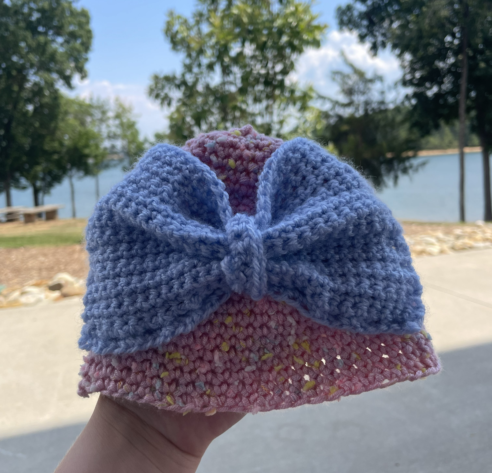
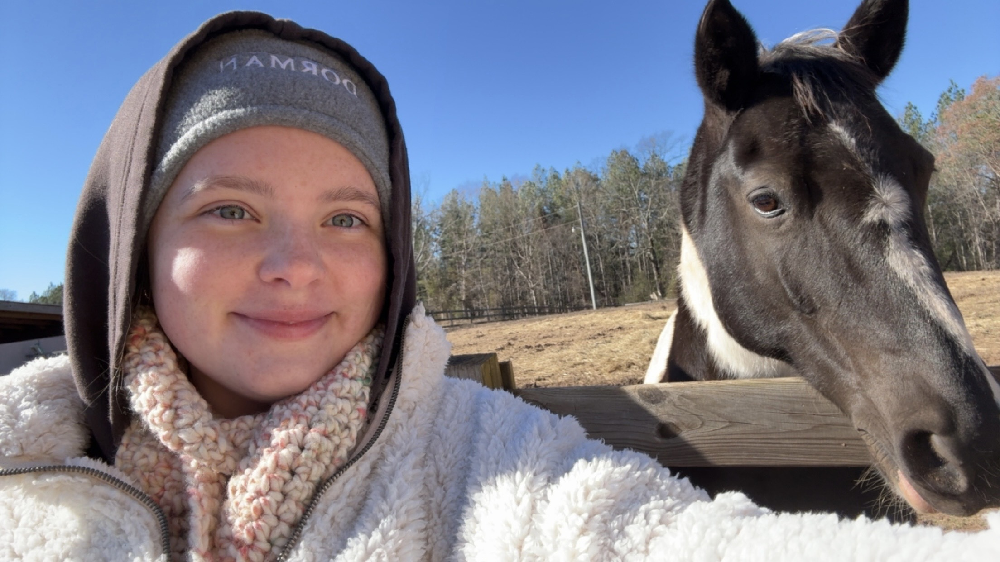

Below are the details about my life that have shaped my perspective, research and design interest, and more.
I grew up for the first 11 years of my life in Cheraw, SC, a small rural town with no malls or movie theaters. There was no STEM program at my school and I never saw a science fair or summer camp. However, at the end of my 5th grade year, I was introduced to the term "STEM" and, more specifically, the field of engineering through the Horizons Program when I moved to Roebuck, SC. At first, these opportunities were very new to me, and at times I felt as if I had fallen behind. However, I soon entered my school's science fair, learning about the scientific method, compiling a poster and demonstration, and presenting to my class. In 8th grade, I had the opportunity to apply for the high school STEM program. Without expecting much, I was accepted into the selective program, which enabled me to conduct research on the MAOA gene and its impact on behavior and then complete an internship at the Spartanburg Regional Healthcare System. This internship introduced me to biomedical engineering. I learned about the novel signatera blood test which enabled physicians to detect relapse in high-risk patients by identifying circulating tumor DNA in blood samples. This internship was the reason I ultimately applied to Clemson's Biomedical Engineering program.

I am a person who has always loved creating things, and one of my long-term, crafty hobbies has been crocheting infant caps for local pregnancy centers. This was an opportunity I found to give back to my community while being creative with designs and doing something I enjoy. Other creative hobbies I have has been making "pinch pots" with air dry clay, specifically making tricket trays. I enjoy shaping the material and seeing my ideas being physical pieces.

Another aspect of my life that led me to biomedical engineering is my passion to care for people. However, this all started with my love for animals, specifically rescues. I grew up having many animals, such as dogs, cats, a hamster, hermit crabs, a rabbit, fish, a horse, and a chicken. Most of these animals were rescues. When we got my horse, Marley, from an auction, she was incredibly malnourished, requiring daily treatment, a diet promoting weight gain, and a regular exercise routine to build her strength and endurance. Caring for these animals taught me a lot but also made me very aware of biomedical technologies that support animal health and make it possible to restore quality of life to animals that have faced medical challenges.